What's On
211 events across 28 days, read from Instagram posts by NYC venues and organizers. The email covers the first 1 days — as many as fit before Gmail truncates a message. The remaining 13 of that window, and everything beyond it, are here.
On each day
One-off events and dated instances of regular series.
Running across dates
Exhibitions and other single things that run continuously. Each bar is one show, drawn across the days it is open.
- Sina Najafi Talks About Genocide with Eyal Weizman
- The Dance of an Open Mind: Toni Morrison's Radical Attentions
- 2ION Music Group / Quiet Luxury / Nearmint
story image
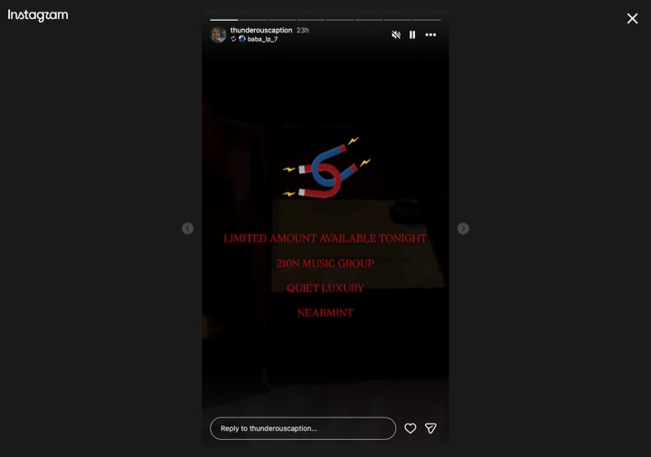
- Biggeo Celebrations Pt 2 - Staten Island Official Halloween Party
story image
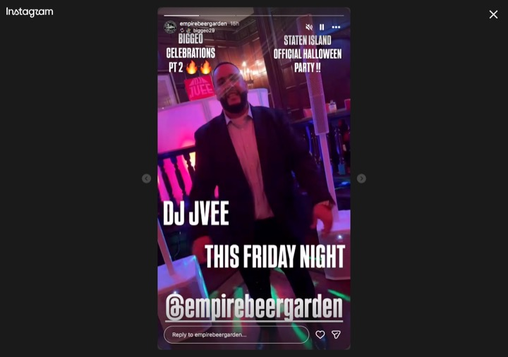
- Cherry Pop with Nadine & Rider
- Critical Nightlife Studies
story image
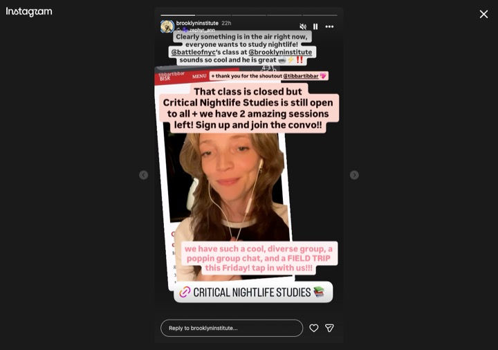
- Halloweekend: ATAUD + Lost Souls Night + Resident Runners Present: The NYC Marathon After-Party
- Joyride Nightmare
story image

- PRESSURE: Scorpio Season
- Robtober: Season 8 NYC 2026
story image

- Singers Halloween Weekend
story image
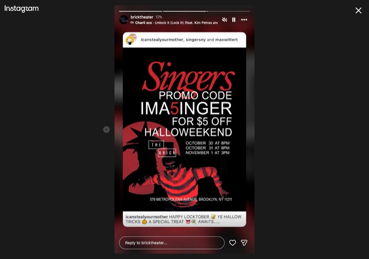
- The Shed Open Jam - Robtober Afterparty Edition
story image
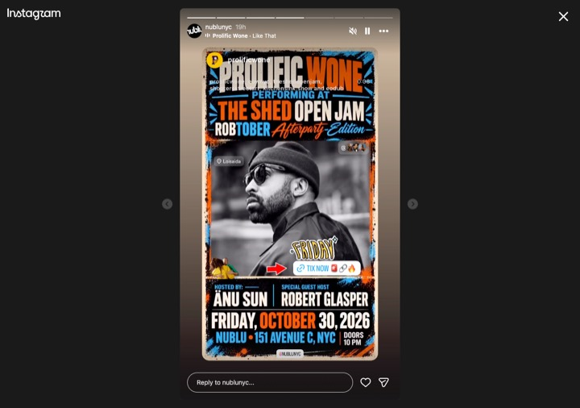
- The Superfly Halloween Disco
story image
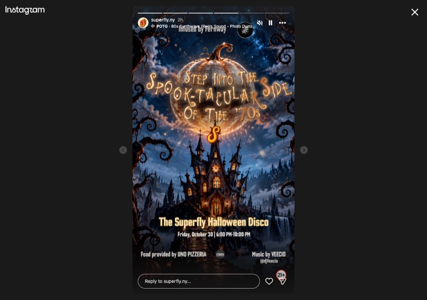
- 444 Live at Barzakh
story image
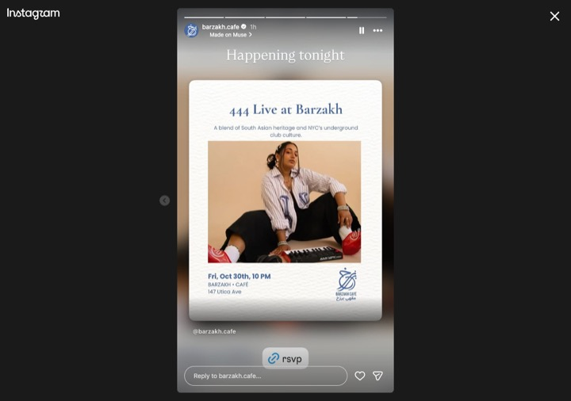
- BOSS BARITONES "You are the One" CD release gig
story image
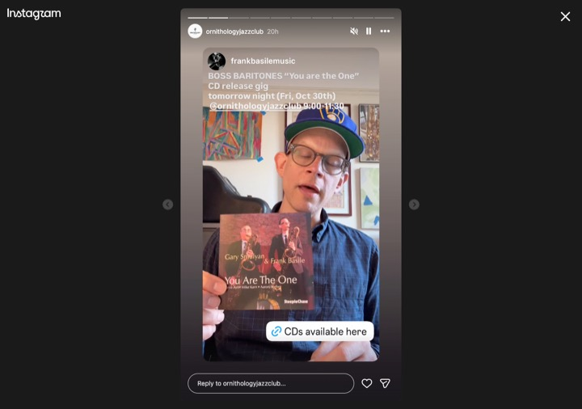
- DOOPEES · AIR VIBES
story image

- Hillai Govreen Quartet + Boss Baritone
- Nuci Nebieridze
story image

- Gen Minutes to Live (1932)
story image
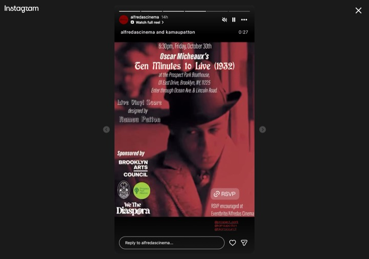
- Nonfiction by Any Means Necessary: An Evening with Journalist and Documentarian Tracii McGregor
- Shriek Show: Best of Spectacle Edition (15th Anniversary Horror Marathon)
- THE HOST (2006) - Free Screening & Guided Discussion
story image
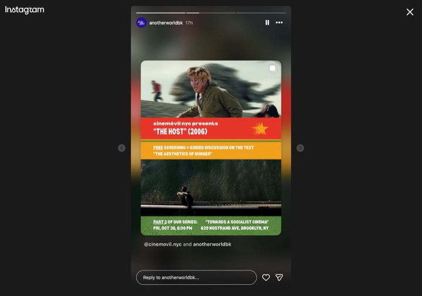
- Who Killed Alex Odeh?
story image

- The Bending Live Podcast
story image
- Paper Cuts: Independent Publishing in the United States, 2000-2025 - Guided Walkthrough
- People's Poetry Gathering: Channeling Edgar Allan Poe in the Historic NYC Marble Cemetery
- Voices from the Movement
- Good Vibrations: Saints and Sinners Halloween Party
story image
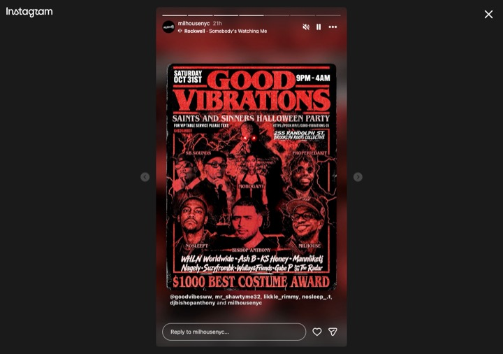
- Lith Printing Workshop with Brittonie Fletcher
- Members +1 Social
story image
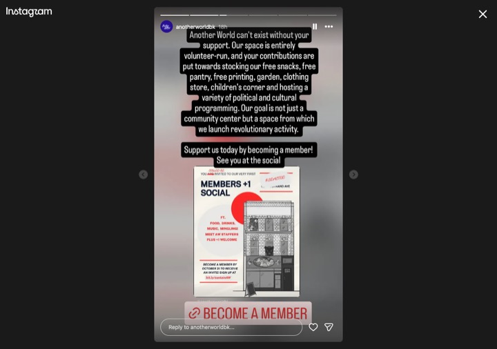
- Monster Bash
- Myrtle Monster Mash: Pie Games Edition
- Physical Therapy Halloween
story image

- Scene Study: Creating Behavior with Christopher Martin
story image

- South House Halloween Party
- The Spammys
- Top 10 Scariest Moments at Baby's All Right
- Trick or Streets
- Wingz in the Haunted Trap
story image
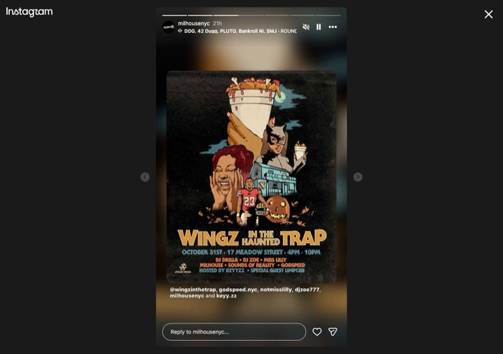
- Ben Silashi & Hillaigoygreen Performance
story image
- Dabin Ryu - "Discomfort" Live Release Show
- Halloween Special: Live at Ornithology
story image
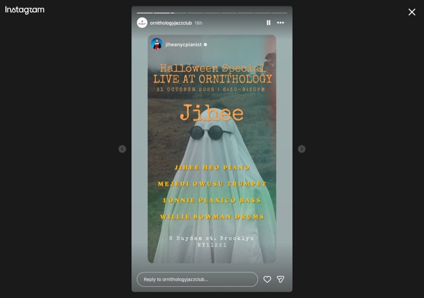
- Persian Jam Session with Mehrnam Rastegari - Halloween Edition
story image

- Scary Good Comedy
- Live By The Sword Tattoo Times Square Grand Opening & Halloween Sale
- The Shops by Protection Spell Halloween Weekend
- afrofatalism - NOW HIRING
story image

- Last Days of Grilling: Seafood Snacks
- Liverpool vs. Arsenal Watch Party
story image
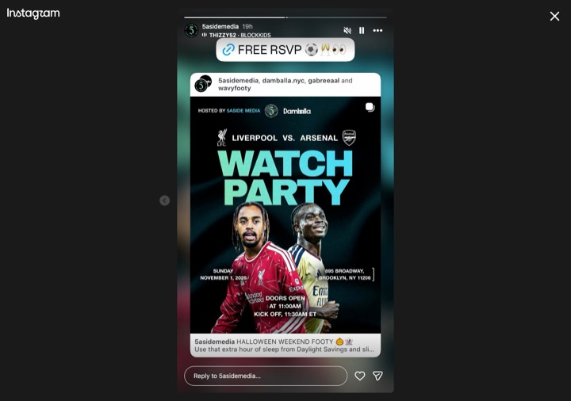
- SINS NYC - Día de Muertos
- The Joys of Disco II IVI Waacking Celebration
story image

- Erykah Badu
- Listen and Learn to Erykah Badu's Live Album
- People's Poetry Gathering: Indigenous Jazz Rock of the Joy Harjo Band & Contemporary Blues w/ the Cornelius Eady Group
- Saint James Joy at NYC Marathon Mile 8
- Blade Runner 2049 Final Cut - Live with The Avex Ensemble
story image
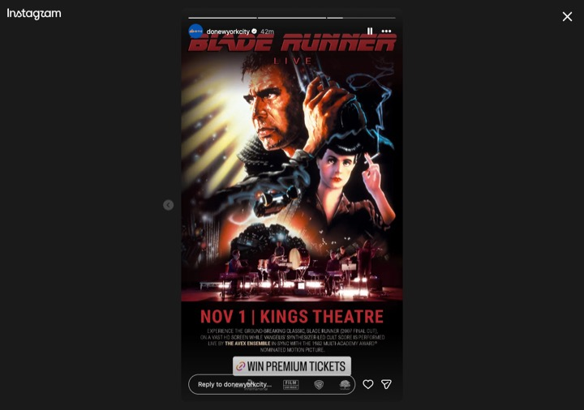
- CASINO screening with Q&A with Nicholas Pileggi
- Book Talks with Jose Ando
- The future exists for the most part in the present: On Poetry, the Avant-Garde, and the Left
- Experiments in Style: Speed dating with the downtown experimental theater greats
story image

- Lesbian Politics: Sex, Difference, and Domination
story image

- Tattoo Booking - Tribal Tattoo Appointments
- The People Power Giving Project
story image


- Attention Activism and Future Schools
- BookTalk: Patti Smith & Nelio Biedermann in Conversation
- Bound by Kyle Marshall Choreography
- Nobody's Dummy with Sophie Becker and Sarah Kessler
story image
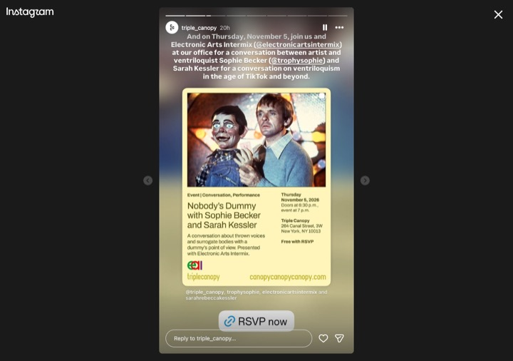
- Once More, With Feeling 25th Anniversary Live
- 2026 Aperture Gala
- Listening While Muslim
- Nature Journaling: Nature After Dark
story image
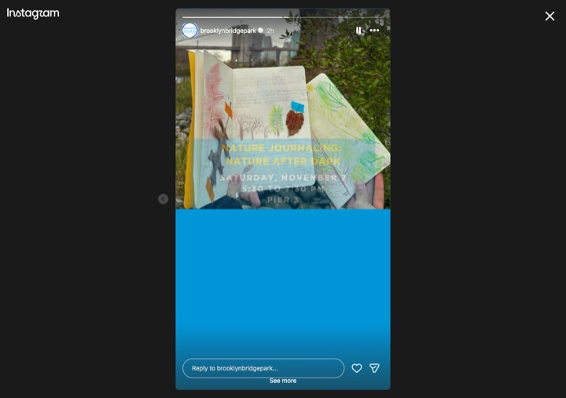
- Pretty Gay
story image
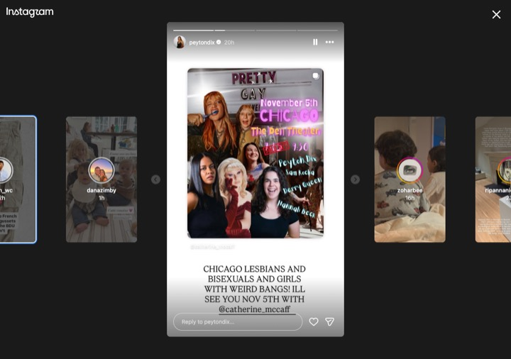
- Wine Night
- Alan Lomax Benefit Concert & Film Screening
- Black Planet, Blue Sun EP Release - In-Store Listening Jam
- Ghibli Jazz Night
- Playback with Smalltown Supersound (41st edition)
- A Radical Thread - Screening and Q&A
- Femme Noir
- La Merde! The Mole!
- Love, Joy & Power: Tools for Liberation - Film and Talk with Daresha Kyi
- Public Programs
story image

- El Museo Cultural Event / Exhibition
- Garden medicine for lamina (opening reception)
- PROPS from Barakei: Eikoh Hosoe and Jason Wee
- Robert H. Colescott 'Cairo'
- Roy Lichtenstein Exhibition Opening
- Tools of Worship
- What the Light Becomes - Opening Reception (Kehinde Wiley's fourth exhibition)
- Christeene + Geo Wyex
story image
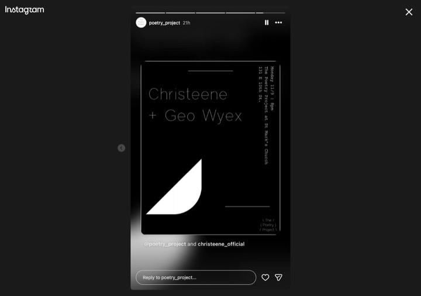
- Performance Lecture: Jason Wee on Eikoh Hosoe and Yukio Mishima
story image
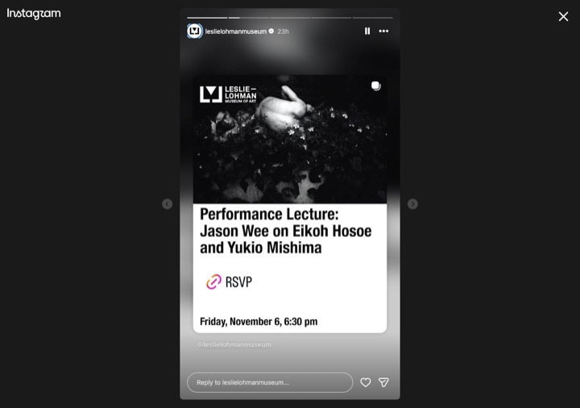
- Queer Spaces, Queer Contexts
- The Speculative Future
story image
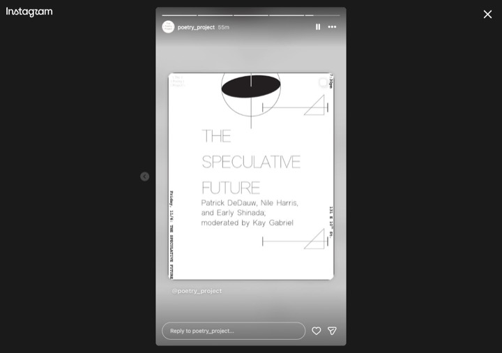
- Christeene + Geo Wyex
story image
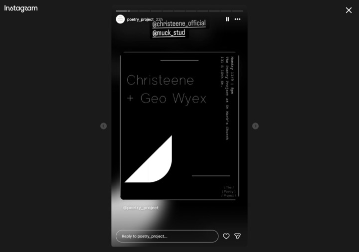
- why would you hurt me on a dying planet?
- Bulletshrimp! X Singers #0004 Comic Release Party / Vince's Birthday
story image
- Meisner Mind/Linklater Voice: Exploring Technique with Christopher Jon Martin
story image
- Crooklyn: Opening Night Procession + Screening
story image

- EVERYTIME
- Narrative & Experimental Horror, Comedy & Music Videos
story image

- Paper Cuts: Independent Publishing in the United States, 2000-2025 - Guided Walkthrough
- TIME-OUT Book Launch
story image

- Chekhovian
story image

- Voices from the Movement
- Jazz Age Lawn Party - Autumn Edition
- Lith Printing Workshop with Brittonie Fletcher
- No Borders in New York
story image
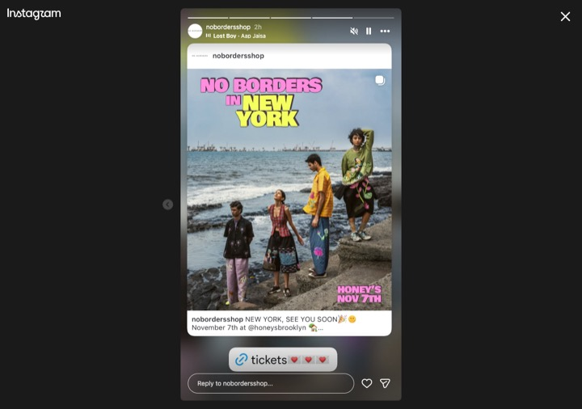
- Phytograms Intro Workshop with Anne Eder
- Radical Scenic and Media Design: A Workshop with Ping Chong
story image

- Scene Study: Creating Behavior with Christopher Martin
story image
- Youth Training
story image
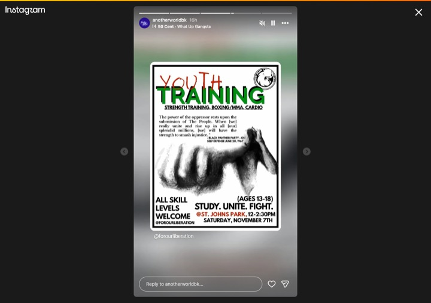
- Corey King Live at Nublu NYC
story image

- Maudlin Candour
- DAD STROLL: A Morning of Cartoons at Maysles


- MUSKISM: A Guide for the Perplexed - Book Launch with Quinn Slobodian and Ben Tarnoff
- Every A-Side Has a B-Side with Ralph Lemon, Sol Cabrini, Taja Cheek (L'Rain), Jonathan González, Nile Harris, yuniya edi kwon, and T. Lax
story image

- Flash Day
- SPABOY and Arielle DE Pinto Pop Up
- Yu Up? Book Club - The Wretched of the Earth
- LIBATIONS: CLOSING GATHERING
- Park Slope Food Coop Performance Series
- Black Earth, Living Memory
- Paper Cuts: Independent Publishing in the United States, 2000-2025 - Guided Walkthrough
- Bets in a Burning House
- Ghosted, Too
- Site Conditions: Five Talks on Art and the City
- Speaking Without Tongues
story image

- Technomisoginary with Sophie Lewis and Kalindi Vora
story image

- River of Fundament
- Chemical Painting with Rose Frisenda
- Humor as a Weapon: A Two-Day Writing Class
- Rescue Dogs, Pilates and Matcha Fundraiser
- Roebling Rink Opening Day
story image
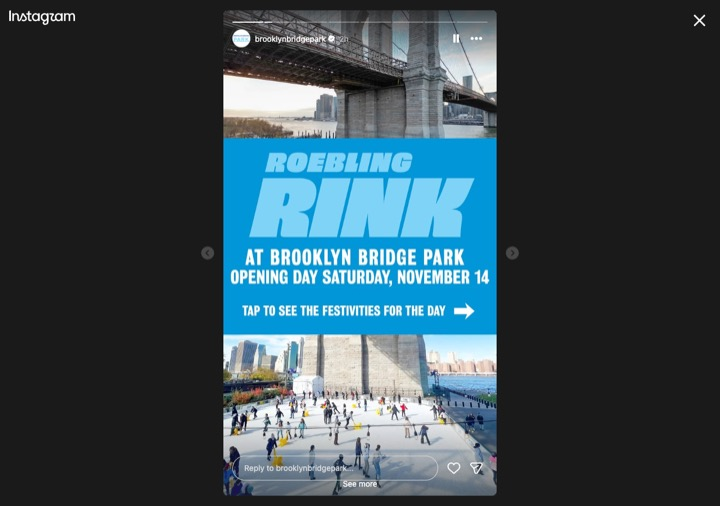
- Kaleta & Super Yamba Band November Tour
- Lampblack Magazine Vol. 6 Launch
- An Evening with Terre Thaemlitz and Ciarán Finlayson
story image

- Cue the Record Presents Listening Session 036: Diving into James Brown and his influence on hip hop
- GIFT - Rare Screening with Live Score by Eiko Ishibashi
- Dwaalgasten (Wanderers) Festival Exchange
story image

- Remember, We Are Born In The Garden: A Dinner with Breadtree Farms x Public Records
- Author Talk: Damage: Notes on a Queer Aesthetic
story image
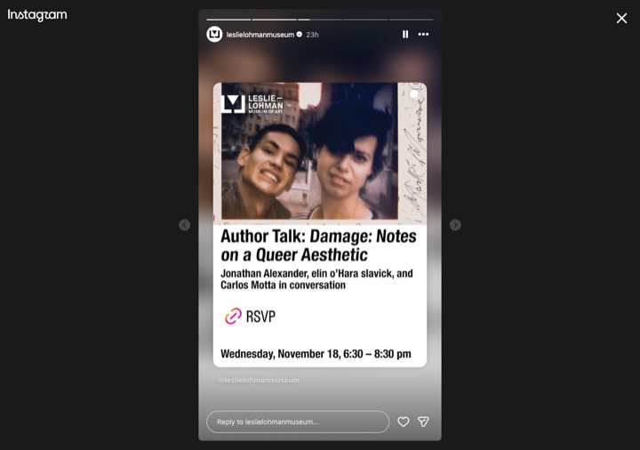
- Bar Laika - 42nd Edition
story image
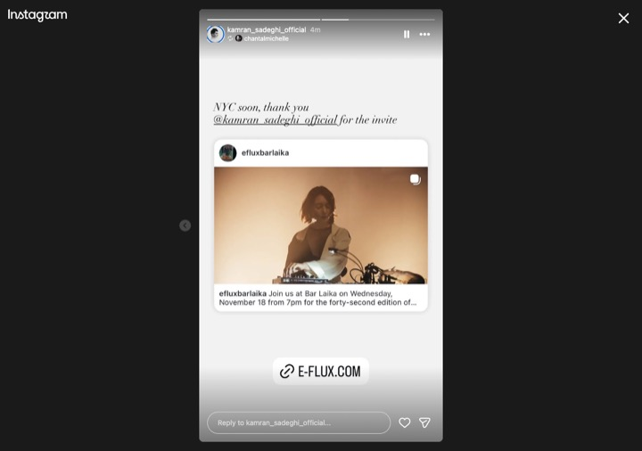
- Chemigrams: Composition and Concept with Bridget Conn
- BOUCHRA
- Attention Activism and Future Schools
- Reverent Portraits: Drawing, Painting, and Assemblage with S. Yemisi Adeyemo
- Brass Queens & NYC Brass Double Release Party
- Artist Talk: Charles Atlas and Joe Westmoreland
story image
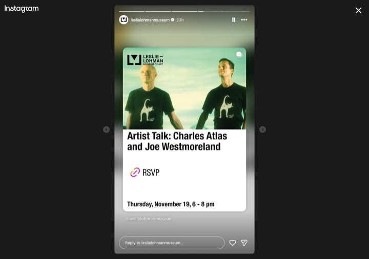
- El Museo Cultural Event / Exhibition
- Roy Lichtenstein Exhibition Opening
Later
Dated events beyond the month above. Only days with something on them are listed, which is why the dates jump.
No events match that filter.
Series that run regularly but whose next date no post has stated. They are not placed on a day because nothing observed says which day.
- NYC DSA Cosoc Weekly Meeting
- Poetry Project Event with Steven Taylor
- Chicago (Musical Theater Production)
- Dog Day Afternoon
- Salesman on Broadway
- Art Cart
- Brooklyn Bridge Park Extended Classes Schedule
- Brooklyn Bridge Park Free Fitness Workouts Series
- Chère Chez la Femme! - Disco Dance Party at Ethyl's
- KONPA - Ladies Styling & Goutad
- Sexual Health Mobile Medical Unit - Free Sexual Health Services
- Stroller Runs with DUMBO Dads Run Club
- The Mixtape Club - Open Hours
- Throwback Thursday with That Feeling When
- Wednesday Oyster and Rose Special
- Wellness in Brooklyn's Backyard
- Wellness Wednesdays
- Mandopop Live Performance / Red Pavilion Event
- Ruby Bluesday
- SummerStage
- Michael Findlay's Trilogy of Her Flesh
- Movie Day - Weekly Wednesday Screenings
- Your Mother
- Post Moves Comedy
- AAPI Festival of Tea - Brown Girl Pavilion
- Lanoba Design - Expanded Summer Hours
- MOCA Boycott Picket Line
- NYBG Farmers Market
- Smorgasburg at the World Trade Center
- Artemuseum New York Exhibition/Installation
- Field Meridians at Alcove Cinema
- Gallery/Exhibition at New Museum and E-Flux Screening Room
- Guggenheim Experience/Exhibition
- Posteritati June Acquisitions - Movie Posters Exhibition
- Red Dress Exhibition/Event at The Metropolitan Museum of Art
- TRAN MAGAZINE's JULY ART PICKS - Exhibition/Display